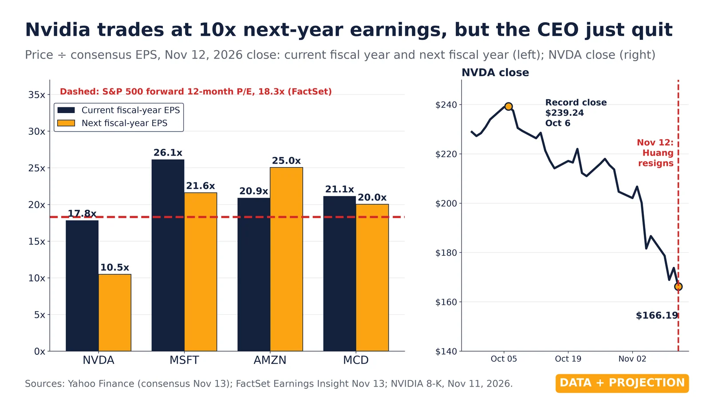
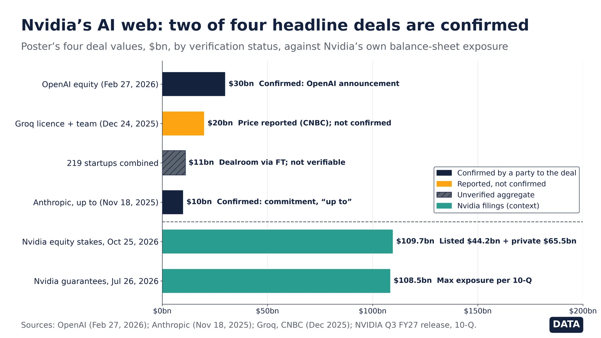

Q9. Nvidia Valuation

Nov 11, 2026 close: NVDA 22.0x trailing GAAP EPS, lowest since Mar 2019; peak 253x. Yahoo, SEC EDGAR.
- Nov 9, 2026 (Data): NVDA closed at 22.6x trailing four-quarter GAAP diluted EPS, exactly Rand’s figure. It was 21.4x on Nov 10 and 22.0x on Nov 11 ($173.73; trailing EPS $7.91).
- Since 2019 (Data): the last time the multiple was this low was Mar 7, 2019 (22.5x). Rand says May 2019, a gap probably due to dating EPS at quarter-end rather than at the filing date, which TVV uses.
- Jul 18, 2023 (Data): the peak was 252.6x, so Rand’s “most people loved it at 200x” is right in scale.
- 2018–19 (Data): the last time the multiple was this low, trailing EPS then fell 48% in a year (Oct 2018 to Oct 2019, crypto glut). A low trailing P/E can come just before earnings fall.
- Nov 17, 2026: NVIDIA reports Q3 FY2027 results. The trailing EPS will reset then, and the multiple will move even if the price does not.
- Correction to the brief: Rand’s chart is trailing GAAP, not forward. Forward consensus history is not public, so no forward P/E is shown (omitted). Pairs with M48 (neo-cloud drawdowns).
Note: “Cheapest since 2019” uses trailing earnings during a steep profit ramp, so the multiple falls fast by construction. The 2019 low came just before a 48% earnings drop. Whether 22x is cheap depends on forward earnings holding up, which this chart cannot show. Rand’s dates also differ slightly from TVV’s (May 2019 vs Mar 2019).
Note: Rebuttal: https://investor.nvidia.com/news/press-release-details/2026/NVIDIA-Sets-Conference-Call-for-Third-Quarter-Financial-Results/default.aspx
Sources: Yahoo Finance NVDA history SEC EDGAR XBRL company facts, NVIDIA (CIK 0001045810) SEC EDGAR: NVIDIA 10-Q filings NVIDIA investor relations: financial reports NVIDIA: conference call for third-quarter financial results Original post: Rand Group, Nov 2026

Nov 12, 2026 close: NVDA 10.5x next-FY EPS, 17.8x current-FY; S&P 500 18.3x forward. Yahoo, FactSet.
- Nov 11–12, 2026 (Data): NVIDIA’s 8-K says Jensen Huang resigned as president, CEO and director effective Nov 11. CFO Colette Kress is interim CEO and keeps the CFO role. The “BREAKING” post is real.
- Oct 6 to Nov 12 (Data): NVDA’s record close was $239.24 on Oct 6. It closed $173.73 on Nov 11, opened $151.01 on Nov 12 (low $148.80) and closed $166.19, 30.5% below the record.
- Nov 12 (Data): Rand’s 9.6x is $152 (an intraday price, not a close) over next-fiscal-year consensus EPS of $15.85. At the $166.19 close it is 10.5x.
- Nov 12 (Data): on current-fiscal-year EPS ($9.32) NVDA is 17.8x, about level with the S&P 500. The “cheaper than the market” claim holds only on next-year EPS.
- Nov 12–13 (Data): FactSet’s S&P 500 forward 12-month P/E was 17.7x on Nov 5 (Rand’s number) and 18.3x in the Nov 13 report. FactSet blends the next 12 months, not a fiscal year.
- Peers (Data): on Yahoo consensus at the Nov 12 close, next-FY P/E is MSFT 21.6x, AMZN 25.0x, MCD 20.0x. Rand’s peer figures appear to mix bases (MSFT near trailing, AMZN and MCD near next-FY) and do not reconcile on one basis.
- M52 link (Data): trailing GAAP P/E was 22.0x on Nov 11 and is 21.0x at the Nov 12 close ($7.91 trailing EPS). Forward and trailing multiples are different measures.
- Nov 17, 2026 (Projection): NVIDIA reports Q3 FY2027 results at 5 p.m. ET, the first under an interim CEO. The Kalshi 40% odds for Kress are not verified and are not plotted.
Note: “Cheaper than the S&P 500” rests on FY2028 consensus EPS, 15 months out and up 70% on this year’s, set before the CEO change. On this year’s EPS Nvidia is level with the market. Forward consensus history is not public, so no time series is shown.
Note: Rebuttal: https://investor.nvidia.com/news/press-release-details/2026/NVIDIA-Sets-Conference-Call-for-Third-Quarter-Financial-Results/default.aspx
Sources: NVIDIA News: CEO transition SEC EDGAR: NVIDIA 8-K dated Nov 11, 2026 TechCrunch: NVIDIA’s Jensen Huang resigns; CFO Colette Kress named interim CEO NVIDIA: conference call for third-quarter financial results FactSet Insight: lowest forward 12-month P/E ratio for the S&P 500 in more than 3 years FactSet Earnings Insight, Nov 13, 2026 (PDF) Yahoo Finance NVDA analysis (consensus EPS) Yahoo Finance NVDA history Original post: Rand Group, Nov 2026

OpenAI $30bn and Anthropic up to $10bn confirmed; Groq $20bn reported; 219-startup $11bn unverified. Company releases.
- Feb 27, 2026 (Data): OpenAI announced a $110bn round including $30bn from NVIDIA, alongside SoftBank $30bn and Amazon $50bn. Confirmed.
- Nov 18, 2025 (Data): Anthropic announced NVIDIA would invest up to $10bn and Microsoft up to $5bn. Confirmed, but as a ceiling.
- Dec 24, 2025 (Data): Groq announced a non-exclusive licence of its technology to NVIDIA, with its founder and president joining NVIDIA. The $20bn cash price was reported by CNBC from Groq’s lead investor; neither company confirmed it. The FT chart files it as an acquisition, though Groq stays independent.
- 219 startups, $11bn (unverified): the figure comes from Dealroom via the FT. Dealroom’s own State of AI report says NVIDIA rarely discloses its cheque, so it counts rounds rather than summing them; $11bn may be round totals.
- Oct 25, 2026 (Data): NVIDIA held $44.2bn of listed and $65.5bn of private equity stakes, up from $12.9bn and $22.3bn on Jan 25, 2026.
- Jul 26, 2026 (Data): NVIDIA’s 10-Q shows guarantees with maximum exposure of $108.5bn, up from $0.86bn a year earlier. TechCrunch reports $118bn after Q3, not yet in a filing.
Note: The web mixes NVIDIA cheques, a commitment ceiling, a reported licence price and an aggregate that may count whole rounds. Two of the four headline numbers are confirmed by a party to the deal. NVIDIA’s own filings show the exposure is real and larger: about $110bn of stakes plus $108.5bn of guarantees.
Note: Rebuttal: https://dealroom.co/airstreet/2026/
Sources: OpenAI: Scaling AI for everyone Anthropic: Microsoft and NVIDIA strategic partnerships Groq: non-exclusive inference technology licensing agreement with NVIDIA CNBC: Nvidia-Groq deal structure (Dec 26, 2025) Dealroom: State of AI 2026 NVIDIA: financial results for third quarter fiscal 2027 SEC EDGAR XBRL company facts, NVIDIA (CIK 0001045810) TechCrunch: Nvidia’s startup stakes ballooned to $65B (Nov 17, 2026) Original post: Rand Group, Nov 2026

Oct 25, 2026: receivables $81.0bn, 64 days of sales, highest since Oct 2022. NVIDIA, SEC EDGAR.
- Nov 29, 2001 (Data): Standard & Poor’s announced that NVIDIA would replace Enron in the S&P 500 after that day’s close (Nasdaq release; LA Times). The fact holds; the poster’s Nov 30 is the first day of membership.
- Oct 25, 2026 (Data): accounts receivable were $81.0bn, up 28.5% from $63.1bn in July, while quarterly revenue rose 20% to $115.8bn. Days sales outstanding rose to 64 from 59–60.
- 2019–2026 (Data): 64 days is the highest since Oct 2022 (74 days), when gaming inventory was being unwound, and above the 2019–2026 average of about 52.
- Oct 2026 (Data): two direct customers account for 18% and 17% of receivables (CNBC, from NVIDIA’s supplemental data).
- Vendor financing (Data): equity stakes were $109.7bn on Oct 25 (from $35.1bn in January), and guarantees reached a $108.5bn maximum exposure in the July 10-Q (from $0.86bn a year earlier).
- Omitted: any claim of accounting manipulation. Nothing in the filings shows restated revenue; the chart shows disclosed exposure, not fraud.
Note: The Enron comparison implies fake revenue; there is no evidence of that, and NVIDIA discloses its stakes and guarantees. What is real is rising customer financing and slower collection: receivables grew faster than sales, and two customers owe 35% of them.
Note: Rebuttal: https://investor.nvidia.com/news/press-release-details/2026/NVIDIA-Announces-Financial-Results-for-Third-Quarter-Fiscal-2027/default.aspx
Sources: Nasdaq via Mondo Visione: NVIDIA replaces Enron in the S&P 500 (2001) Los Angeles Times: Enron replaced in the S&P 500 (Nov 30, 2001) NVIDIA: financial results for third quarter fiscal 2027 SEC EDGAR XBRL company facts, NVIDIA (CIK 0001045810) CNBC: Nvidia earnings report, Q3 fiscal 2027 (Nov 17, 2026) Original post: Michael A. Arouet, Nov 2026